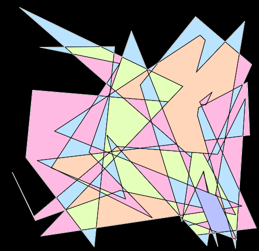

| Date | Tool Name | Description | Links |
|---|---|---|---|
| Jan.30.2017 | Eraser Tool |
To kick things off, here is an eraser tool that area erases planar graph elements. This tool was made as part of my ScribbleJS project and many of these future tools will be extensions of that project. |
ScribbleJS, Eraser Tool |
| Feb.06.2017 | Drawing Additional Lines |

I've implemented line linking within my Sim Urban Game. I will update this algorithm to a stand alone example when I have some time. |
Sim Urban Game |
| Feb.13.2017 | Coloring |
For this week, I explored graph colorings, where adjacent faces do not share colors. In other words, I implemented
computational color by numbers.
I wanted to achieve an effect like the page from this coloring book that I colored ffor 10 hours on a train to Pittsburgh.  This is a coloring that I automatically generated this week. Please use the Demo 
When my naive greedy colorings produced bipartite coloring for the random scribbles, I was surprised. Evidently a single line going through space actually produces bipartite graphs in most situations. 
I tried coloring all of the faces black, and I found it interesting that various topology can easily be seen from this visual perspective. |
Online Demo Graph Coloring Wiki |
| Feb.20.2017 | Additive Line Drawing |
For this week, I made it so that users can draw lines with proper topological updates as desired. This took a while,
since there are a lot more moving parts than creating embeddings from scratch. There were a lot of new functions and edge cases that I hadn't thought much about before. I think that standard tools such as Inkscape would be improved if used this functionality.
 |
Demo! |
| 2.27.2017 | Bezier Curves |
 This week, I have made it so user can use Bezier curves instead of Polylines. Under the hood, the curves are discretized and then they may be converted back into Bezier segments directly from the output Face_Info objects. My favorite part is that Cubic Bezier curves may be perfectly converted into sub curves without any loss of accuracy, because they can be reparameterized via a linear interpolation function. |
Demo!
Code!
Blog Post about cubic spline mathematics. Blog Post about cubic spline mathematics. |
| Future | Symmetry | [DESCRIPTION] Ideas: Editing positions. Expanding network from previous nodes. Bezier curve input / output. Flows. User input. Areas. Smoothing. Symmetry. Randomized bouncing of a geometric form that results in a particular behavior. A study of popcorn probability. Beaches and Oceans. Fix up line segment intersection functions for intersection reporting and monolithic intersection routines. | [LINKS] |
| Future | Packing Graphs | Take a collection of drawings and pack them into a polgonal region of space without collision. | Blue Noise. |
| Mar.6.2017 | Beam Tracer |

Compute the Geometric Filled Regions that coorespond to beams of light traveling through a scene. I will spend this week ironing out the last bugs. |
Online Demo! Git Repository |
| Mar.13.2017 | [Spring Break] | ||
| Mar.20.2017 | Offsets | [DESCRIPTION] | [LINKS] |
| Mar.31.2017 | Flows and/or Smoothing | [DESCRIPTION] | [LINKS] |
| Apr.10.2017 | Topological Constructions | Construction of graphs fitting various parameters, such as descriptions of set theoretic structure. | [LINKS] |
| Apr.17.2017 | Demuth Styling (Or other texturing) | [DESCRIPTION] | [LINKS] |
| Apr.24.2017 | Support Degenerate Geometries | I will try to make the algorithms more robust and will process perfectly overlapping collinear line segments and the like. | [LINKS] |
| May.1.2017 | [TOOL NAME] | [DESCRIPTION] | [LINKS] |
| May.8.2017 | [TOOL NAME] | [DESCRIPTION] | [LINKS] |
{kind=link}
{kind=link}